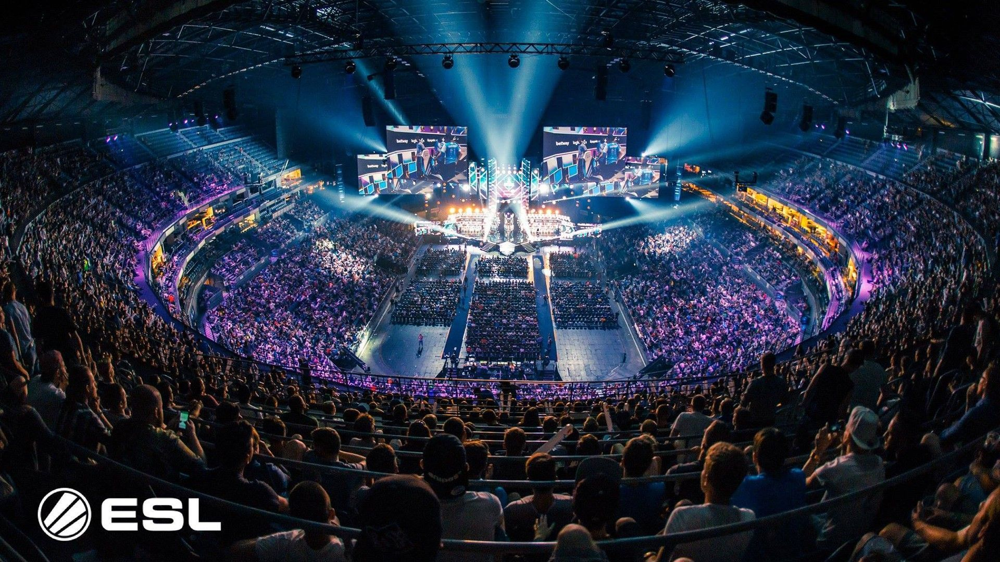
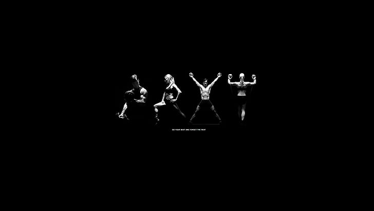

Hobbies
Competitive Gaming
Over the past five years, Counter-Strike: Global Offensive has become an integral part of my gaming journey, captivating me with its intense and strategic gameplay. As a first-person shooter enthusiast, CS: GO's team-based multiplayer action has provided countless hours of thrilling excitement and camaraderie with fellow players. From its diverse arsenal of real-world weapons and tactical gear to the adrenaline-pumping objective-based gameplay, every round feels like a new challenge waiting to be conquered. The game's competitive mode has been the heart of my experience, pushing me to improve my skills, climb the ranks, and embrace the spirit of healthy competition.
Beyond the in-game battles, CS: GO's thriving esports scene has been a captivating aspect of my journey. Watching top-tier players compete in prestigious tournaments worldwide has not only inspired me but also deepened my appreciation for the game's complexity and depth. The community-driven content on Steam, from custom maps to skins and weapon designs, has provided a unique sense of personalization and creativity to my gaming experience.
However, what truly stands out in this incredible five-year adventure is the friends I have made along the way. Collaborating with teammates in intense matches has forged strong bonds and friendships that extend beyond the virtual battlegrounds. We have grown together, learning the value of effective communication, teamwork, and strategy. CS: GO has not only honed my gaming skills but also taught me essential real-life skills, such as leadership, decision-making, and adaptability.
Counter-Strike: Global Offensive has truly become more than just a game to me. It has been a journey of growth, friendship, and a shared passion for the world of competitive gaming. As I look back on my five-year adventure in the virtual battlegrounds of CS: GO, I cherish the memories, the victories, the lessons learned, and the invaluable friendships that will last a lifetime. It remains an unforgettable part of my gaming legacy and an ongoing source of joy, challenge, and camaraderie in my gaming life.
Anime Enthusiast
Over the course of more than seven years and having watched over 700+ anime, my journey in the world of Japanese animation has been nothing short of transformative. Beyond being a mere pastime, anime has become a profound source of inspiration and learning about life, different cultures, and diverse lifestyles. Through the captivating stories and rich characters, I have explored profound themes of love, friendship, perseverance, and personal growth, which have left a lasting impact on my own outlook on life.
Anime has served as a window into various cultures, traditions, and historical backgrounds, enabling me to gain a deeper appreciation and understanding of the world's diversity. From the vibrant cities of Japan to the tranquil countryside of Ghibli films, I have experienced virtual journeys that have broadened my horizons and fueled my wanderlust.
The immersive worlds and relatable characters of anime have taught me invaluable life lessons. From characters overcoming obstacles and achieving their dreams, I have learned about the importance of resilience, determination, and embracing one's uniqueness. Anime has encouraged me to express myself freely, to embrace my passions, and to cherish the connections I share with others.
Beyond its entertaining aspects, anime has motivated me to strive for self-improvement and to never lose sight of my goals. Seeing characters face adversity with unwavering determination has inspired me to pursue my dreams and work towards a brighter future. Moreover, the sense of community among anime fans has fostered a supportive environment, encouraging me to stay positive, motivated, and to share my enthusiasm with others. In this extraordinary journey of over 700 anime, I have not only found joy and entertainment but also a deeper appreciation for life's intricacies and the beauty of embracing individuality. Anime has enriched my life with invaluable lessons, cultural understanding, and the passion to make every moment count. As I continue to explore the vast world of anime, I carry with me the profound impact it has had on my life, driving me to live life to the fullest, express myself authentically, and stay motivated in pursuing my dreams and aspirations.
Health
Engaging in a combination of yoga and calisthenics for your fitness routine is a holistic and effective approach to maintaining a healthy and active lifestyle. Yoga, with its focus on breath control, stretching, and meditation, contributes to improving flexibility, balance, and overall body awareness. It not only strengthens your muscles but also nurtures a deeper mind-body connection, reducing stress and promoting relaxation.
By incorporating calisthenics into your fitness routine, you introduce a dynamic and bodyweight-based workout that enhances your functional strength, muscular endurance, and cardiovascular fitness. Calisthenics exercises, such as push-ups, pull-ups, and bodyweight squats, challenge your body to move in various planes, leading to better agility and coordination.
Both yoga and calisthenics offer diverse physical benefits that complement each other beautifully. Yoga's focus on stretching and recovery can alleviate muscle soreness and increase your range of motion, supporting your calisthenics performance. Meanwhile, calisthenics' strength-building exercises can enhance your stability and control during yoga poses, allowing you to explore more challenging variations.
Beyond the physical advantages, practicing yoga and calisthenics can positively impact your mental well-being. Yoga's meditative aspects help you stay present and centered, reducing anxiety and improving your mental clarity. Calisthenics, with its progressive nature, empowers you to set and achieve fitness goals, boosting your self-confidence and motivation. The combination of yoga and calisthenics fosters a holistic approach to staying fit in life. Together, they nurture your body, mind, and spirit, creating a balanced and sustainable fitness routine. As you continue this journey, you can expect to experience improved physical performance, heightened self-awareness, and an overall sense of well-being, making the integration of yoga and calisthenics a rewarding and fulfilling path towards a healthier and happier life.